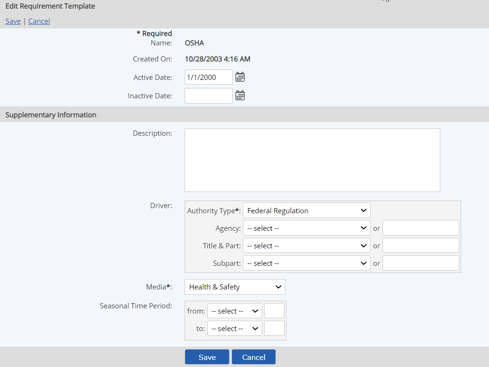

The fields that define the drivers for Requirements of any type are derived from the Requirement Template. The Requirement Template contains general information about the authority and driver for requirements tracked in the system.
The fields on the Requirement Template define:

A Requirement Template must be used when creating a requirement object. If no appropriate template is available, you can create a new one when you create a requirement. See Requirement Templates.
In addition, user-defined custom fields may be applied with a Custom Field Template. A Custom Field Template may also be applied to an existing object, so it is not absolutely necessary to define the Custom Field Template first.